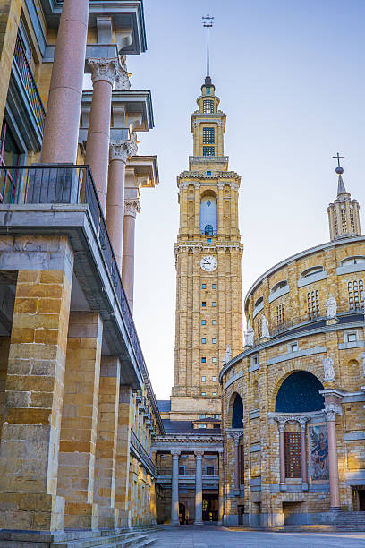

La Universidad Laboral de Gijón es un edificio situado en la parroquia de Cabueñes del concejo de Gijón (Principado de Asturias, España). Desde su construcción entre 1948 y 1957, y hasta la década de 1980, fue sede de una institución franquista orientada a educar a los hijos de los trabajadores. En 2007 se reinventó bajo la marca Laboral Ciudad de la Cultura, que engloba equipamientos como la Radiotelevisión del Principado de Asturias, Laboral Centro de Arte y Creación Industrial y la Facultad de Comercio, Turismo y Ciencias Sociales de la Universidad de Oviedo.A su vez está integrada en la Milla del Conocimiento Margarita Salas.
Se trata de la obra arquitectónica más importante de cuantas se realizaron en Asturias durante el siglo xx. Además, con sus 270 000 m², es el edificio más grande de España.Está declarado Bien de interés cultural con la categoría de Monumento desde 2016.
A mediados de los años 1940, como consecuencia de un grave accidente laboral en una mina de la cuenca del Caudal, el subsecretario del Ministerio de Trabajo, Carlos Pinilla Turiño, que acudió al funeral de las víctimas de dicho accidente, se reunió en Gijón con un grupo de personalidades locales como Alejandro Pidal Guilhou; Álvaro Armada Ulloa, octavo conde de Revillagigedo, y Ricardo Heredia Guilhou, tercer conde de Benahavís, lideradas por el industrial minero José María Fernández «el Pontico», para impulsar la creación de un orfanato minero con la intención de ayudar a los afectados.Esta institución se constituyó de manera formal en escritura pública otorgada ante notario el 6 de octubre de 1945 con el nombre de Fundación «José Antonio Girón», en homenaje al entonces ministro de Trabajo.
El objetivo fundacional concreto fue el de formar a niños huérfanos de padres víctimas de accidentes laborales en la minería, para lo que se proyectó un edificio que pudiera atender a mil alumnos y que contara con las distintas dependencias requeridas para el desarrollo de la vida estudiantil, como residencia, escuela, talleres industriales, granja, instalaciones deportivas o campos de cultivo. El Ministerio de Trabajo encomendó a la Junta del Patronato de la Fundación la responsabilidad de llevar adelante la obra por Orden de 14 de junio de 1946. Para ello se adquirieron en la carretera de Gijón a Villaviciosa unos terrenos con una superficie de 1 544 572 m², de los que 381 551 m² lo fueron mediante el trámite de expropiación forzosa. Otra superficie complementaria, de 1 464 300 m², se adquirió para la Granja Lloreda, en El Infanzón.
Volver al indiceSe encargó la construcción del complejo a un equipo de arquitectos dirigido por el madrileño Luis Moya Blanco y formado por él mismo, su hermano Ramiro Moya Blanco, Pedro Rodríguez A. de la Puente y el gijonés José Marcelino Díez Canteli. Los mejores técnicos de la época se ocuparon de las diferentes especialidades que la obra demandó. Así, los jardines fueron diseñados por Javier Winthuysen Losada, Inspector Nacional de Parques y Jardines Artísticos; el proyecto de granja agronómica se encargó a los ingenieros agrónomos Gabino Figar Álvarez e Ignacio Chacón Enríquez; las esculturas fueron realizadas por Manuel Álvarez Laviada y Florentino Trapero; y los mosaicos por Santiago Padrós, sobre trabajos del pintor sevillano Joaquín Valverde.
Las obras comenzaron en abril de 1948. Durante el transcurso de las obras, en 1950, el Ministerio de Trabajo decidió la creación de las Universidades Laborales, destinadas a la formación profesional de los jóvenes, por lo que el Orfelinato Minero acabó transformándose en la Universidad Laboral de Gijón. La enseñanza y dirección del centro se encomendó a la Compañía de Jesús, mientras que de la intendencia se encargó la Orden de las hermanas pobres de Santa Clara (Clarisas). La Fundación «José Antonio Girón» se disuelve en 1954 en favor de la Caja de Seguros de las Mutualidades Laborales.
Volver al indiceEn el edificio central se encuentran en la actualidad diversas instituciones, como la Facultad de Comercio, Turismo y Ciencias Sociales Jovellanos de la Universidad de Oviedo, la Escuela Superior de Arte Dramático de Asturias, el Conservatorio Profesional de Música y Danza, el Centro Integrado de Formación Profesional, la Sociedad de Servicios del Principado de Asturias y, en los antiguos talleres, Laboral Centro de Arte y Creación Industrial.

En el resto de terrenos pertenecientes a la Fundación «José Antonio Girón», destinados a la Universidad Laboral de Gijón, se han construido todo tipo de instalaciones. Por ejemplo, en la Granja Lloreda se ha construido un campo de golf municipal y parte de la Granja Agronómica de Somió alberga las dependencias del Instituto de Educación Secundaria Universidad Laboral, mientras que el que fuera convento de las monjas clarisas es actualmente la sede de la Radiotelevisión del Principado de Asturias. Parte de los terrenos para actividades deportivas son ocupados ahora por el Hospital de Cabueñes, el Tanatorio, el Parque Científico Tecnológico de Gijón y el campus de Gijón de la Universidad de Oviedo.
En el ala norte se ubica la sede de la multinacional alemana ThyssenKrupp Elevator, con su centro mundial I+D+i de la unidad de negocio de escaleras mecánicas, pasillos rodantes y pasarelas de embarque, con una nave de aproximadamente dos mil metros cuadrados, en la cual se prueban los prototipos de los futuros modelos de la empresa.
Destaca también el proyecto para la creación de más de un centenar de miniapartamentos para estudiantes y profesores de la Universidad de Oviedo, a modo de residencia universitaria, basándose en el actual modelo europeo de los colegios mayores de las grandes universidades. Esta oferta quiere ser ampliada también a los alumnos del centro de formación profesional.
La cadena hotelera AC Hotels proyectó la apertura de un hotel de cinco estrellas ocupando la antigua residencia femenina, proyecto suspendido por la crisis económica.
Volver al indice Vuelve a la página de Gijón